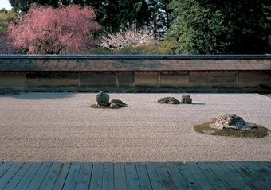

Originally built as a second home for an aristocratic family. A military commander transformed the estate into a Zen temple in 1450. The famous rock garden is in the kare-sansui (dry landscape) style, and has just 15 rocks positioned among raked white stones in a rectangular plot measuring about 25 meters east-west, 10 meters north-south. The garden is known worldwide as an expression of the spirit of Zen. Many Japanese people find Zen concepts difficult to comprehend, but almost everyone comes away from the temple touched by the purity and mysterious vibrancy emanating from the garden.
Return